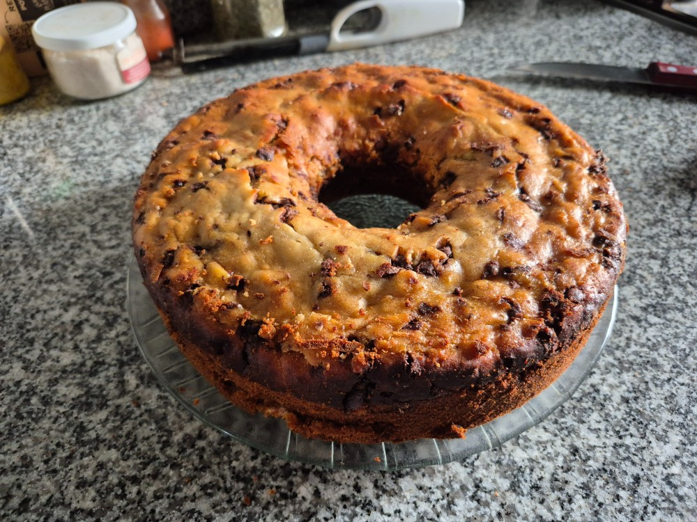
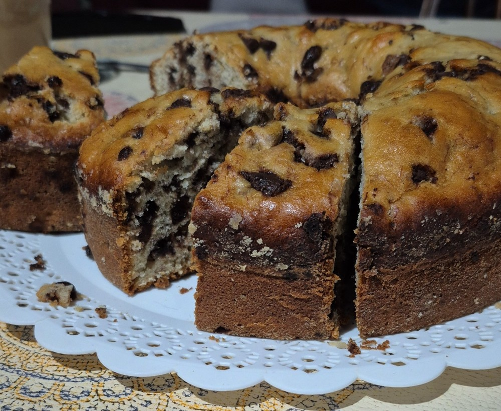

Budín de banana con chips de chocolate amargo

¿No sabes que hacer para merendar? Te traigo esta receta sencilla junto con los tips para que te salga el mejor budín de banana
Hoy venimos con una joyita para los que están buscando una merienda o un desayuno rico. Un clásico que no falla, ideal para aprovechar esas bananas que ya están al borde la jubilación. Las bananas pasadas, aunque no lo crean, son oro puro en la cocina, y con ellas podemos lograr recetas muy sabrosas como un budín de banana esponjoso, húmedo y con ese dulzor característico. En esta nota, vamos a desmenuzar cómo hacer un budín de banana fácil, con trucos, y consejos para evitar tragedias culinarias (sí, hablamos de esos budines que se hunden en el centro) y hasta la receta paso a paso para que no haya excusas. ¡A cocinar!
Ingredientes
- 4 bananas maduras
- 125gr de azúcar
- 1 chorro de esencia de vainilla
- 150 gr de chips de chocolate amargo
- 2 tazas de harina leudante
- 1/4 de taza de aceite de girasol
- 3 huevos
- Una pizca de canela (opcional)
- Un poco de harina común o 000
Preparación
- Batir los huevos con el azúcar hasta llegar a punto letra.
- Incorporar el 1/4 de taza de aceite junto con el chorro de esencia de vainilla.
- Pisar las bananas con un tenedor o pisapapas e incoporarlo a la mezcla anterior.
- Pasar los chips de chocolate por harina común e incoporarlos en la mezcla. Con esto, los chips quedarán distribuidos en la mezcla y no se irán al fondo.
- Tamizar la harina leudante e incorporarla a la mezcla anterior poco a poco con movimientos envolventes de forma suave. Esto para que entre aire en la masa y no quede apelmazado.
- Volcar la mezcla en un molde previamente enmatecado y enharinado, tirar por encima los chips que guardamos anteriormente.
- Meter al horno precalentado a fuego bajo por 40 minutos.
- Si al momento de meter un cuchillo sale limpio o el chocolate de los chips, ¡significa que está listo!
Resultado final
Video tutorial
Para más recetas, hacé click acá